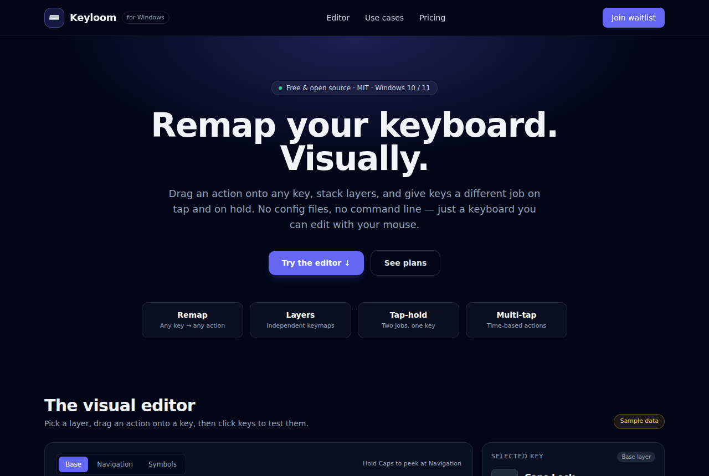

Windows Keyboard Manager: Free Keyboard Remapping
hollow-445/windows-keyboard-manager · ProductivityMIT⭐ 1,071

What it is
hollow-445/windows-keyboard-manager is a free, MIT-licensed Windows app for remapping keys without writing scripts. Per the README, it supports custom layouts, multiple logical layers, tap-hold actions, multi-tap behavior and programmable modifier combinations — the kind of setup usually associated with programmable keyboards like QMK or ZMK, but applied to any standard keyboard.
Why it's taking off The pain is real: Windows still has no built-in layer or tap-hold support, and reaching for the arrow keys or brackets all day is a genuine ergonomic cost. The feature list maps directly to what home-row-modifier users already do on custom hardware, and it's easy to demo in a short clip. The repo also shows a striking star count for a project only a day old — worth treating with some caution until the code and releases have had more eyes on them.
Where the product opportunity is
The obvious gap is the configuration experience: most remappers are config-file or script driven. A visual editor where you drag keys, define layers and tap-hold behavior, then sync the profile to the cloud across machines would be a real step up. Per the README, the current build ships as a zip with an .exe and libvlc.dll, so a signed installer and a transparent build pipeline would also help trust. The competitive bar is high — AutoHotkey, PowerToys Keyboard Manager and Kanata are all free — so differentiation has to come from UX, not features.
Today's top 5
| # | Repo | Buzz | Startup | Overall |
|---|---|---|---|---|
| 1 | hollow-445/windows-keyboard-manager | 6.67 | 7.2 | 7.23 |
| 2 | Loris-593/notebook-fan-control-windows | 7.67 | 6.8 | 7.22 |
| 3 | Red2076-arch/waifu2x-image-upscaler-windows | 7.33 | 5.35 | 6.84 |
| 4 | storytold/craft-anything | 8.33 | 6.1 | 6.57 |
| 5 | pithings/unkernel | 8.33 | 5.6 | 6.51 |